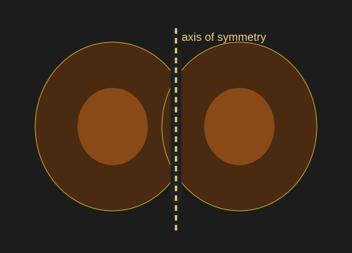
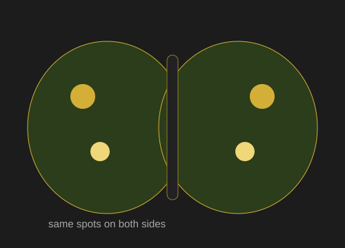
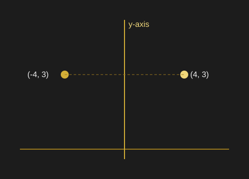

Explain the Mathematics
What Is Reflection Symmetry?
Reflection symmetry means that one side of something looks like a mirror image of the other side. In a butterfly, the left and right wings have very similar shapes and patterns. This is why the butterfly looks balanced.
The Axis of Symmetry
The line through the middle of the butterfly's body is called the axis of symmetry. It separates the butterfly into two sides. The patterns on the wings appear in similar positions on each side of this line.


